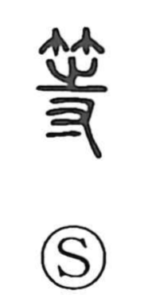

等

Uncategorized
Kun: hitoshii, nado | On: tou, do
equal ・ class ・ grade ・ companions
Explanation
A phono-semantic character: the bamboo radical evokes the bamboo and wooden tallies once used for records, while 寺 serves as the phonetic, signaling the on-readings (as in 待 tai and 特 toku). The Shuowen describes it as “equal tallies,” referring to tallies cut to regulated lengths—one shaku eight sun, two shaku four sun, and so on—then strung together like books. From this image of matched, standardized strips arises the sense of “equal, of the same level,” which naturally extends to people of the same rank or group, as seen in compounds like 等輩 and 等倫.